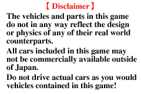

GT Advance 3 - Pro Concept Racing (USA)
EEPROM 4K gbakit Built-In 💾 MultiBoot 🎮 4P Link
Cartridge Identity
- Game Code
A2GE(FamilyA2G)- Header Title
GT ADVANCE 3- Maker / Revision
78/ rev0- ROM Size
- 8.0 MiB (8,388,608 B)
- Save Media
EEPROM 4K- SHA-256
f583ea5911c963774f8f26941c6cc4c5512d4586c2933fdd8829124041535c03- Engine / SDK Group
comm-002(145 families)
Screenshots


Link Cable & Multiplayer Communications
This title contains detected communication capabilities: 💾 MultiBoot 🎮 4P Link.
Detailed protocol specifications, SIO registers, Joybus commands, and MultiBoot sequences are documented in the Link & Multiplayer Reference.
- Multi-Player SIO (4P)
- 16-bit ring network · SIOCNT (
0x04000128) literals:0x00067c,0x0006fc,0x000728· SIODATA32/SIOMULTI0 (0x04000120) literals:0x000bd4,0x000d44,0x000ea4 - Single-Cart MultiBoot
- Single-Cartridge MultiBoot (Download Play) client/server handler · Thumb SWI 0x25 (
0xDF25):0x02d98e,0x03bc30,0x1a5e44,0x1dea9e
Battery Save Support in gbakit
Built-in definition (A2GE)
gbakit save verify A2GE save.sav
gbakit save decode A2GE save.sav
gbakit save fix A2GE damaged.sav -o repaired.savROM Assets, Compression & Audio
- BIOS Compression
- LZ77 (
0x10): 252 streams · RLE (0x30): 0 streams - ROM Pointer Tables
- 8 tables (0 pointing to validated compressed streams)
- SDK Backup Tags
EEPROM_V122
Asset Map (formatkit.asset-map.v1)
Download A2GE-r0-f583ea5911c96377.asset-map.json.gz (38,290 B (37.4 KiB)) Verified PASS · 4.58% coverage
| Metric | Bytes / Value | Entries |
|---|---|---|
| Identified | 57,569 B (56.2 KiB) (0.69%) | 319 |
| Mapped | 0 B (0.00%) | 0 |
| Opaque | 326,460 B (318.8 KiB) (3.89%) | 1 |
| Unknown | 8,004,579 B (7.63 MiB) (95.42%) | 297 |
| Total ROM Size | 8,388,608 B (8.00 MiB) | 617 |
| Coverage % | 4.58% | — |
| Entries w/ Code Refs | 336 / 617 (54.46%) | — |
Top Identified Formats: gfx.gba-palette (316 · 36,032 B (35.2 KiB)) · compress.bios-lz77 (1 · 20,801 B (20.3 KiB)) · audio.m4a-song-table (1 · 544 B) · gba.rom-header (1 · 192 B)
Largest unknown Extents (Headerless / Custom Asset Candidates)
| Offset | Size | Shannon Entropy | Code Refs |
|---|---|---|---|
0x00520730 | 2,095,312 B (2.00 MiB) | 6.826 bits/B | 0 |
0x00418620 | 1,081,584 B (1.03 MiB) | 6.757 bits/B | 0 |
0x001200EC | 1,049,108 B (1.00 MiB) | 6.134 bits/B | 0 |
0x003BC068 | 378,264 B (369.4 KiB) | 6.991 bits/B | 0 |
0x0075C861 | 249,835 B (244.0 KiB) | 6.832 bits/B | 0 |
gzip -dk A2GE-r0-f583ea5911c96377.asset-map.json.gz && gbakit map verify rom.gba A2GE-r0-f583ea5911c96377.asset-map.json
gbakit assets export rom.gba --asset-map A2GE-r0-f583ea5911c96377.asset-map.json -o out/Text, Fonts & Scene Data
- Primary Text Encoding
- 16-bit / UTF-16LE text
- Font & VWF Indicators
- VWF Width Table 1bpp Font · BIOS SWIs: BitUnPack
0x10:14· LZ770x11/12:7· Huffman0x13:2· RLE0x14/15:7 - Scene & Packaging
7ROM pointer tables (≥32 entries,0≥200) ·23relativeu32TOCs ·147OAM metasprite hits
Hardware MMIO Subsystems
ppu_display0x80050e8,0x800555c
Regional Variants & Revisions (Family A2G)
- Advance GT2 (Japan) (En) (
A2GJ, 8 MiB) - GT Advance 3 - Pro Concept Racing (Europe) (
A2GP, 8 MiB)